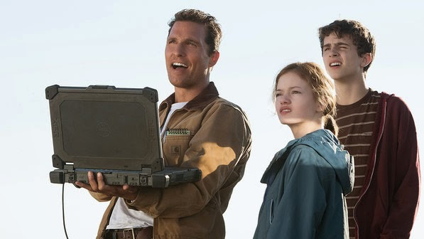
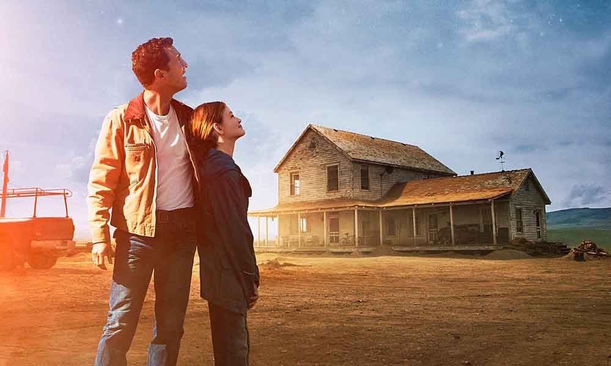
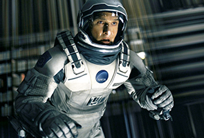
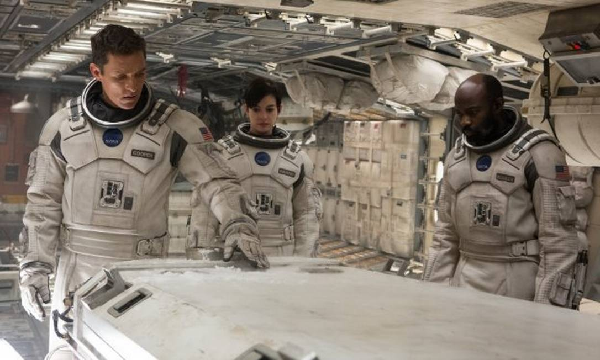
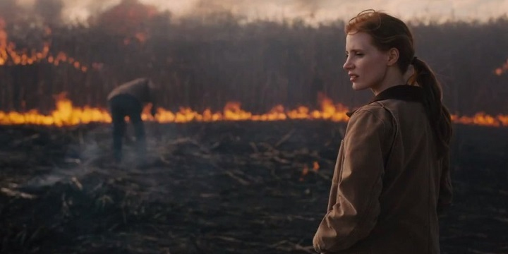

Filme favorito
Interstellar (no Brasil, Interestelar) é um filme anglo-americano de ficção científica dirigido por Christopher Nolan e estrelado por Matthew McConaughey, Anne Hathaway, Jessica Chastain, Bill Irwin, Mackenzie Foy, Matt Damon, John Lithgow e Michael Caine. Ele conta a história de uma equipe de astronautas que viaja através de um buraco de minhoca à procura de um novo lar para a humanidade. Os irmãos Christopher e Jonathan Nolan escreveram o filme unindo ideias do primeiro com um roteiro que o segundo havia escrito em 2007. Nolan foi o produtor junto com sua esposa Emma Thomas e com Lynda Obst. O físico teórico Kip Thorne, cujo trabalho inspirou o filme, trabalhou como consultor científico e como produtor executivo.
Detalhes do Filme

O projeto foi co-financiado pela Paramount Pictures, Warner Bros. e Legendary Pictures, enquanto que a Syncopy Films e a Lynda Obst Productions serviram como as companhias produtoras. Nolan contratou o diretor de fotografia Hoyte van Hoytema e filmou Interstellar no formato anamórfico 35 mm e também IMAX 70 mm. As filmagens começaram no final de 2013 e passaram por Alberta, Canadá, pela Islândia e Los Angeles. O filme utiliza muitos efeitos especiais práticos e de miniatura, com a empresa Double Negative criando os efeitos visuais.
Interstellar teve sua estreia em 26 de outubro de 2014 em Los Angeles, sendo lançado comercialmente em novembro. Foi exibido em película cinematográfica em cinemas ainda equipados com essa tecnologia e depois indo para locais com tecnologia digital. O filme foi um grande sucesso nas bilheterias e recebeu críticas bastante positivas, que salientaram a precisão científica, trilha sonora, efeitos visuais e as atuações de McConaughey, Hathaway, Chastain e Foy.
O filme recebeu 5 indicações à 87ª edição do Academy Awards (Oscar 2015), nas categorias de Melhores Efeitos Visuais, Melhor Trilha Sonora, Melhor Edição de Som, Melhor Mixagem de Som e Melhor Direção de Arte, tendo vencido na categoria de Melhores Efeitos Visuais na cerimônia de entrega do Oscar ocorrida no dia 22 de fevereiro.[2] Foi o filme mais pirateado em 2015, com cerca de 46,7 milhões de downloads ilegais.[3]
Enredo
Pragas nas colheitas fizeram a civilização humana regredir para uma sociedade agrária em futuro de data desconhecida. Cooper, ex-piloto da NASA, tem uma fazenda com sua família. Murphy, a filha de dez anos de Cooper, acredita que seu quarto está assombrado por um fantasma que tenta se comunicar com ela. Pai e filha descobrem que o "fantasma" é uma inteligência desconhecida que está enviando mensagens codificadas através de radiação gravitacional, deixando coordenadas em binário que os levam até uma instalação secreta da NASA liderada pelo professor John Brand. O cientista revela que um buraco de minhoca foi aberto perto de Saturno e que ele leva a planetas que podem oferecer condições de sobrevivência para a espécie humana. As "missões Lázaro" enviadas anos antes identificaram três planetas potencialmente habitáveis orbitando o buraco negro Gargântua: Miller, Edmunds e Mann – nomeados em homenagem aos astronautas que os pesquisaram. Brand recruta Cooper para pilotar a nave espacial Endurance e recuperar os dados dos astronautas; se um dos planetas se mostrar habitável, a humanidade irá seguir para ele na instalação da NASA, que é na realidade uma enorme estação espacial. A partida de Cooper devasta Murphy. Além de Cooper, a tripulação da Endurance é formada pela bióloga Amelia, filha de Brand; o cientista Romilly, o físico planetário Doyle, além dos robôs TARS e CASE. Eles entram no buraco de minhoca e se dirigem a Miller, porém descobrem que o planeta possui enorme dilatação gravitacional temporal por estar tão perto de Gargântua: cada hora na superfície equivale a sete anos na Terra. Eles entram em Miller e descobrem que é inóspito já que é coberto por um oceano raso e agitado por ondas enormes. Uma onda atinge a tripulação enquanto Amelia tenta recuperar os dados de Miller, matando Doyle e atrasando a partida. Ao voltarem para a Endurance, Cooper e Amelia descobrem que 23 anos se passaram.
Fotos aleatórias do filme


